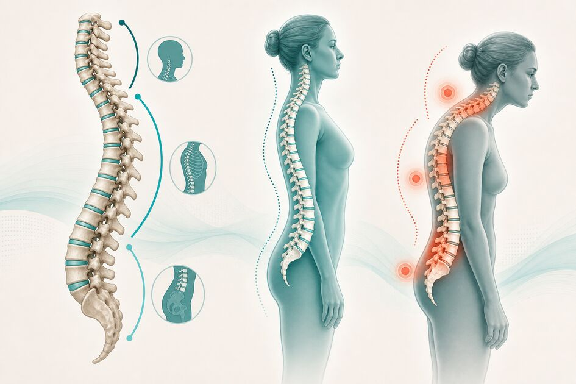
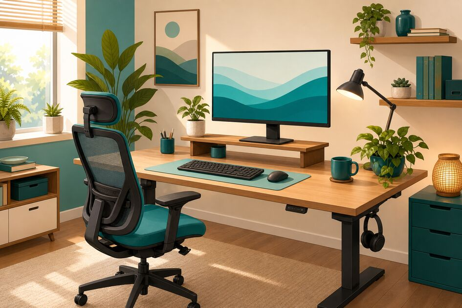
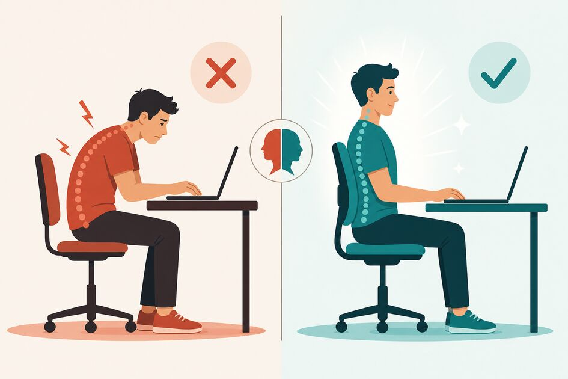

Blog PosturaCerta
Guias práticos para quem trabalha de casa e quer cuidar da postura sem complicação.
 ERGONOMIA
ERGONOMIA
Postura Correta para Sentar: Guia Completo
Passa mais de 6 horas sentado trabalhando de casa? Veja como ajustar a postura na cadeira e terminar o dia sem dor lombar.
 SAÚDE
SAÚDE
Postura Correta: O Que É, Por Que Importa e Como Manter
Postura correta não é ficar duro na cadeira. Entenda o que a ciência diz e como aplicar no seu dia de trabalho remoto.
 HÁBITOS
HÁBITOS
Como Melhorar a Postura: 7 Hábitos para o Dia a Dia
7 hábitos fáceis de encaixar na rotina do home office para melhorar a postura sem precisar parar tudo.

COLUNAPostura e Coluna: Como Proteger Sua Coluna no Trabalho
Sua coluna não foi feita para 8h na mesma posição. Saiba o que acontece quando a postura falha e como proteger a coluna no trabalho remoto.

HOME OFFICEErgonomia no Home Office: Monte um Espaço que Cuida de Você
Checklist prático para transformar qualquer canto da casa num setup ergonômico que protege sua postura o dia todo.

PREVENÇÃOPostura Errada: Sinais, Consequências e Como Corrigir
Dor no pescoço, ombro travado, lombar queimando? Esses são sinais de postura errada. Saiba como corrigir antes que vire crônico.